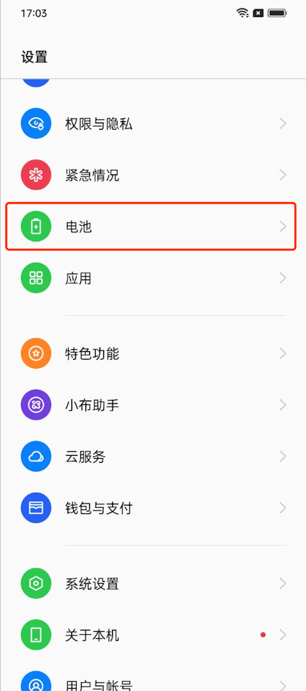
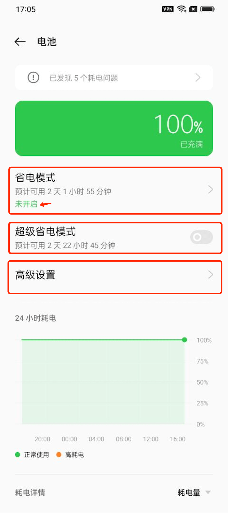
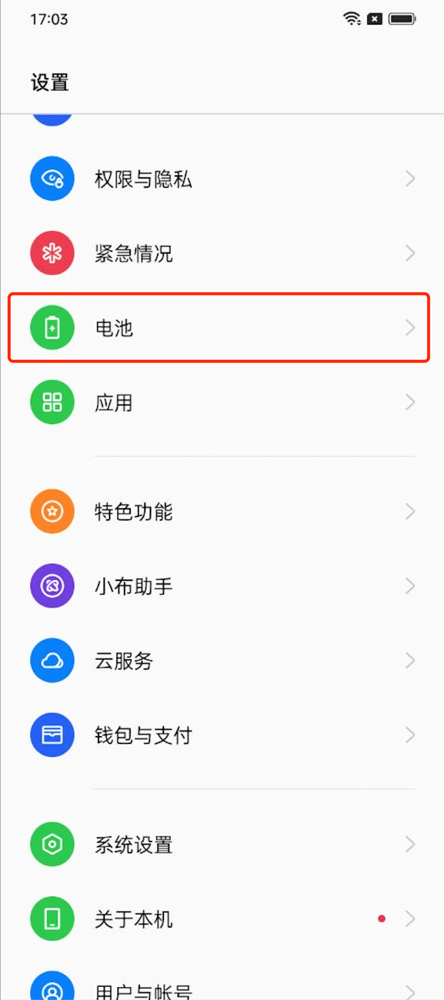
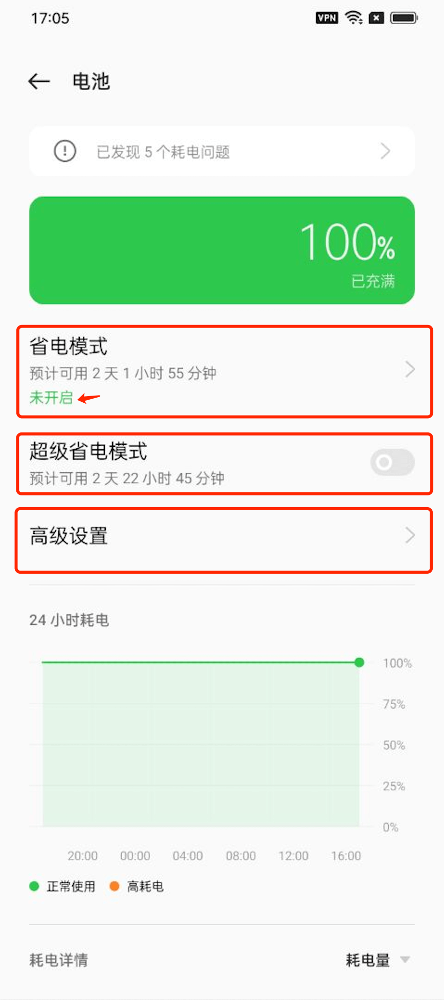
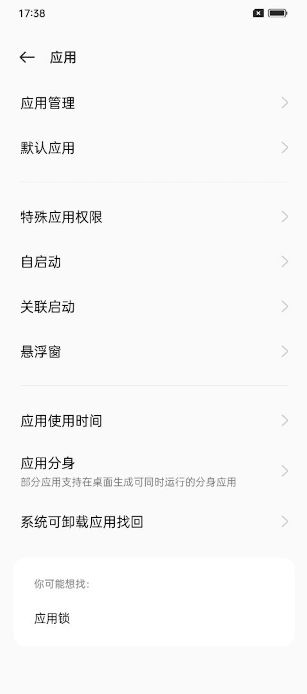
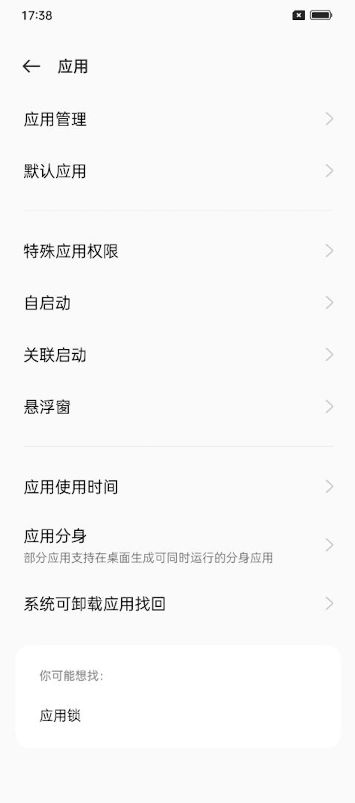
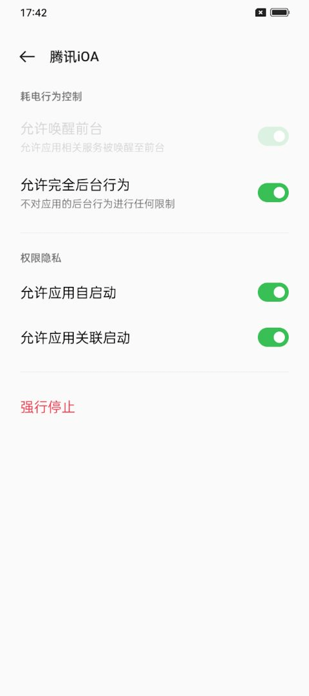
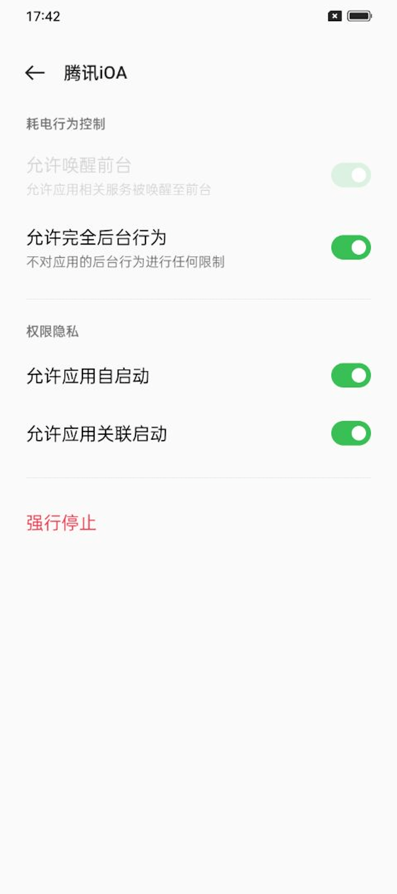

* How to Set Application Background Running on OPPO Phones (ColorOS 12)
1. [Lock Background Task] (Anti-kill)
Open the iOA interface —— Return to the desktop —— Swipe up from the bottom of the screen (click the multitasking button if there is a navigation bar) —— Enter the multitasking page —— Click three dots —— Click Lock —— A lock icon appears in the upper right corner indicating successful locking.


After locking, you can avoid clearing iOA when clicking [Clear].
However, please note that if you drag the iOA window in the multitasking page alone and swipe up, iOA will still be cleared.
2. [Close Power Saving Mode]
Pull down the phone status bar —— Click the settings icon —— Battery —— Close [Power Saving Mode] / Close [Super Power Saving Mode] (if enabled)
 




Enter Battery —— Advanced Settings —— Power Consumption Anomaly Optimization —— Set iOA not to be optimized

3. [Allow Background Running]
Settings —— Applications —— Application Management —— Find iOA and click —— Power Consumption Management —— Enable [Allow Wake Up Frontend], [Allow Full Background Behavior], [Allow Application Auto Start], [Allow Application Associated Start]
 

 
